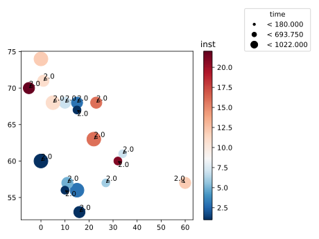

Bioplots.scatterplot¶
-
Bioplots.scatterplot(df, x, y, color=None, marker=None, size=None, size_scale=10, bin_labels=None, size_ascending=True, palette='Set1', vmax=None, vmin=None, center=None, cbar_ax=None, marker_values=None, visible_hits=None, label=None, text_adjust={'arrowprops': {'arrowstyle': '->', 'color': 'k'}})¶ It plots scatters with annotation by different color and marker shape (optional).
- Parameters
- dfpd.DataFrame
Dataset for plotting.
- x, ystr
Names of variables in
df.- color: str
names of variables in
dfwhere piont color is mapped to.- vmaxfloat, optional
Max value on the continuous color range mapping, by default None
- vminfloat, optional
min value on the continuous color range mapping, by default None
- centerfloat, optional
center value on the continuous color range mapping, by default None.
- size: str
names of variables in
dfwhere piont size is mapped to.- size_scaleint, optional
The scale proportion to size position, by default 200
- bin_labelsdict, optional
A dict contains bins and lable information to cut values in different group, by default None e.g bins=[0,.01,.05,1],labels=[‘**’,’*’,’NS’]
- size_ascendingbool, optional
Whether larger values have larger marker size, by default True.
- markerstr
names of variables in
dfwhere piont shape is mapped to.- palettestr, list, or dict, optional
Paltte to control the color mapping options. Default is ‘Set1’.
- visible_hitsint or str, optional
Number of hits to show the label or a list of customized label to show, by default 10
- labelstr
Names of variables in
df, which contians labels for points. by default None- text_adjustdict, optional
Annotation text property, by default dict(arrowprops=dict(arrowstyle=’->’, color=’k’)) Reference: https://adjusttext.readthedocs.io/en/latest/
- Returns
- axmatplotlib Axes
Returns the Axes object with the plot drawn onto it.
Examples
Visualize 2D scatter plot with mutiple annotations:
>>> import Bioplots as bpt >>> df = bpt.get_rdataset('lung') >>> bpt.scatterplot(df=df.head(20),x='wt.loss',y='age',color='inst',palette='RdBu_r', ... size='time',label='status',visible_hits=[2],size_scale=400)
